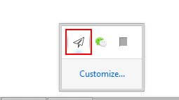

3关于网络
服务器配置
服务器地址 : 104.224.139.55服务器端口 : 80
密码 : a456852**
加密方式 : aes-256-cfb
多平台配置方式
安卓端配置
最新版客户端下载(2015.10.25) ShadowSocks_android 2.7.7第一步: 屏幕左边缘右滑 点击 Add Profile (中文界面找到对应位置即可)
第二步: 如图添加配置
password(密码): a456852**
配置好后点击右上角开关即可(off--->on)
开启后测试--->Google
返回顶部
iPhone 端配置
iPhone 需要先越狱 目前iOS 9.0-9.0.2 已经发布点击这里下载(windows端) 适用iOS 9.0 - 9.0.2
点击这里下载(windows端) 适用iOS 8.0 - 8.1
点击这里下载(windows端) 适用iOS 7.1-7.1.x
理论上只要在桌面端安装盘古越狱 连接手机 点击"一键越狱"即可
常见问题在这里-->iOS 9.0 - iOS 9.0.2完美越狱常见问题（持续更新）
越狱完毕后在iOS上打开Cydia(第一次打开会显示准备文件系统 等待即可)
第一步: 打开Cydia 下面点击栏切换到第五项搜索"shadowsocks" 搜索结果点击第一个
第二步: 点击右上角Modify(安装) 有一些小细节注意一下
第三部: 桌面上找到ShadowSocks 图标 打开后点击"Create New Profile" 然后如图配置
password(密码): a456852**
配置好后点击上面"Enable Proxy" 打开开关即可
开启后测试是否代理成功--->Google
返回顶部
Windows 桌面端配置
最新版客户端下载(2015.10.25) ShadowSocks_win 2.5.6第一步: 桌面找到Showsocks.exe 然后右键选择"按管理员运行"
第二步: 在桌面右下角找到纸飞机图标

第三步: 双击纸飞机图标 弹出配置窗口 点击左边"Add"新加一项 配置如图
password(密码): a456852**
第四部: 鼠标右键单击纸飞机图标 按下图步骤说明勾选
第五步: 鼠标右键单击纸飞机图标 按下图步骤说明勾选 Global 全局
开启后测试是否代理成功--->Google
返回顶部
额外: 不用的时候记得取消掉"Enable System Proxy" 的勾 不然会影响正常上网(即使ShadowSocks已关闭)
Mac OS X 桌面端配置
最新版客户端下载 ShadowSocks_OSX 2.6.3配置参照windows端配置
password(密码): a456852**
开启后测试--->Google
返回顶部
>电信网络下 微林加速服务配置
由于电信升级CN2精品网络 原先163(普通)网络的外网连接状况愈加糟糕
这就导致外网连接通常只有10KB左右 再加上超高的GFW丢包 体验可想而知
微林的加速服务就是构建在电信cn2网络之上
加速之前网络 电脑-->电信普通网络-->电信普通网络国际出口(高丢包 高限速)-->美国代理主机
加速之后网络 电脑-->电信普通网络-->微林服务器(福建)-->微林cn2网络国际出口-->美国代理主机
加速之后外网体验明显改善
注: 微林加速是收费的 1RMB/G 流量
第一步: 点击这里 注册微林
第二步: 登录进入"仪表盘" 点击充值
第三步: 选择20/24G(按自己用量决定) 然后会自动跳转支付宝支付

第四步: 重新进入"仪表盘"-->"用量"-->选择"vxTrans"(找不到的话在右上角设置里勾上vxTrans)
第五步: 在"vxTrans"中点击"创建连接点"
第六步: "创建连接点"配置如图 然后确定即可
第七步: "创建连接点"确认提交后 在"连接点列表"中 稍等系统自动生成接入点
记录下服务器地址 服务器端口
第八步: 用微林生成的服务器地址 端口 替换掉原先的服务器地址(104.224.139.55)还有端口80
示例: iPhone上更改之后
开启后测速--->Google
返回顶部
>特殊网络下 使用Tor 进行匿名访问
由于对敏感网站的访问以及特殊网络下的需求 仅仅服务器提供代理对于安全性是远远不够的
而Tor 是实现匿名通信的自由软件 它可用来屏蔽一个互联网用户的IP地址 允许匿名浏览。
Tor把流量分散到互联网上的多个地点 所以不存在单一一点可以把你和你的目的地联系起来。
这就好像用一条拐弯抹角的、难以辨认的路径甩掉跟踪你的人，然后定期擦掉你的脚印。
在Tor网络上 来源和目的地不是用一条路径直接连接的 而是由一条通过数台中继的随机路径覆盖原始路径，数据包在这条路径上传输，
因此，不存在任何单一一点上的观察者能够知道数据从哪里来、到哪里去。
更多访问Tor 原理概述
随机路径以及出口节点